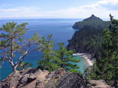
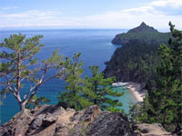
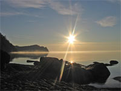
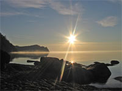

 

Байкал — озеро в южной части Восточной Сибири, самое глубокое озеро на планете, крупнейшее в мире хранилище запаса пресной воды.
Озеро находится в своеобразной котловине, со всех сторон окружённой горными хребтами и сопками. Западное побережье — скалистое и обрывистое, рельеф восточного побережья более пологий, местами горы отступают от берега на десятки километров.
В байкальской воде очень мало растворённых и взвешенных минеральных веществ, ничтожно мало органических примесей, много кислорода.
Вода в озере настолько прозрачна, что отдельные камни и различные предметы бывают видны на глубине 40 м. В это время байкальская вода бывает синего цвета. Летом же и осенью, когда в прогретой солнцем воде развивается масса растительных и животных организмов, прозрачность её снижается до 8—10 м, и цвет становится сине-зелёным и зелёным.
Вода в Байкале холодная. Температура поверхностных слоёв даже летом не превышает +8…+9 °C, в отдельных заливах до +15 °C. Температура глубинных слоёв — около +4 °C.
Как правило, желающие посетить Байкал сначала отправляются в один из ближайших крупных городов: Иркутск, Улан-Удэ или Северобайкальск. Проезжая по Транссибирской магистрали между Иркутском и Улан-Удэ, можно часами любоваться видами озера, простирающегося прямо за окном поезда.
В 70 км от Иркутска, на берегу Байкала возле истока Ангары расположен посёлок Листвянка — одно из самых популярных мест туризма на Байкале. Добраться сюда из Иркутска можно на автобусе или теплоходе всего за час с небольшим. Самые популярные маршруты проходят из Листвянки до Больших Котов, а также на полуострове Святой Нос.
Одним из красивейших уголков на Байкале считается Чивыркуйский залив, который богат живописными бухтами, загадочными островами, целебными источниками. Хороший вид на залив открывается с вершин Святого Носа, на который можно попасть из поселка Усть-Баргузин.
На различных участках вокруг озера проходит Большая Байкальская Тропа — система экологических троп и один из прекраснейших способов для туристов увидеть уникальную природу и насладиться захватывающими видами и панорамами Байкала.
По материалам Википедии.